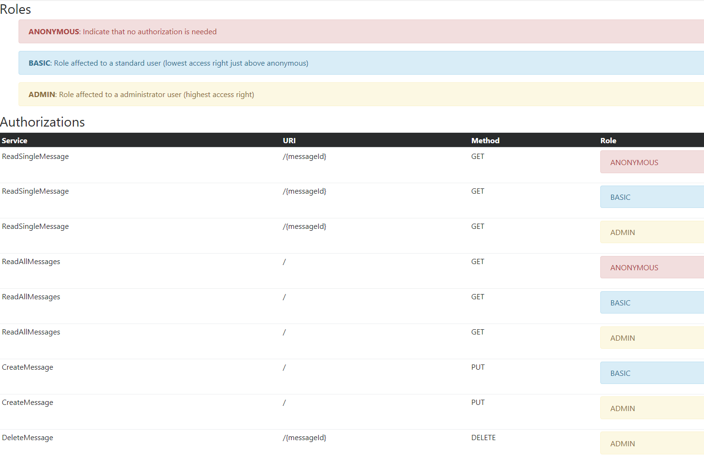

Authorization Testing Automation Cheat Sheet¶
Introduction¶
When you are implementing protection measures for an application, one of the most important parts of the process is defining and implementing the application's authorizations. Despite all of the checks and security audits conducted during the creation phase, most of the problems with authorizations occur because features are added/modified in updated releases without determining their effect on the application's authorizations (usually because of cost or time issue reasons).
To deal with this problem, we recommend that developers automate the evaluation of the authorizations and perform a test when a new release is created. This ensures that the team knows if changes to the application will conflict with an authorization's definition and/or implementation.
Context¶
An authorization usually contains two elements (also named dimensions): The Feature and the Logical Role that accesses it. Sometimes a third dimension named Data is added in order to define access that includes a filtering at business data level.
Generally, the two dimensions of each authorization should be listed in a spreadsheet that is called an authorization matrix. When authorizations are tested, the logical roles are sometimes called a Point Of View.
Objective¶
This cheat sheet is designed to help you generate your own approaches to automating authorization tests in an authorization matrix. Since developers will need to design their own approach to automating authorization tests, this cheat sheet will show a possible approach to automating authorization tests for one possible implementation of an application that exposes REST Services.
Proposition¶
Preparing to automate the authorization matrix¶
Before we start to automate a test of the authorization matrix, we will need to do the following:
-
Formalize the authorization matrix in a pivot format file, which will allow you to:
- Easily process the matrix by a program.
- Allow a human to read and update when you need to follow up on the authorization combinations.
- Set up a hierarchy of the authorizations, which will allow you to easily create different combinations.
- Create the maximum possible of independence from the technology and design used to implement the applications.
-
Create a set of integration tests that fully use the authorization matrix pivot file as an input source, which will allow you to evaluate the different combinations with the following advantages:
- The minimum possible of maintenance when the authorization matrix pivot file is updated.
- A clear indication, in case of failed test, of the source authorization combination that does not respect the authorization matrix.
Create the authorization matrix pivot file¶
In this example, we use an XML format to formalize the authorization matrix.
This XML structure has three main sections (or nodes):
- Node roles: Describes the possible logical roles used in the system, provides a list of the roles, and explains the different roles (authorization level).
- Node services: Provides a list of the available services exposed by the system, provides a description of those services, and defines the associated logical role(s) that can call them.
- Node services-testing: Provides a test payload for each service if the service uses input data other than the one coming from URL or path.
This sample demonstrates how an authorization could be defined with XML:
Placeholders (values between {}) are used to mark location where test value must be placed by the integration tests if needed
<?xml version="1.0" encoding="UTF-8"?>
<!--
This file materializes the authorization matrix for the different
services exposed by the system:
The tests will use this as a input source for the different test cases by:
1) Defining legitimate access and the correct implementation
2) Identifying illegitimate access (authorization definition issue
on service implementation)
The "name" attribute is used to uniquely identify a SERVICE or a ROLE.
-->
<authorization-matrix>
<!-- Describe the possible logical roles used in the system, is used here to
provide a list+explanation
of the different roles (authorization level) -->
<roles>
<role name="ANONYMOUS"
description="Indicate that no authorization is needed"/>
<role name="BASIC"
description="Role affecting a standard user (lowest access right just above anonymous)"/>
<role name="ADMIN"
description="Role affecting an administrator user (highest access right)"/>
</roles>
<!-- List and describe the available services exposed by the system and the associated
logical role(s) that can call them -->
<services>
<service name="ReadSingleMessage" uri="/{messageId}" http-method="GET"
http-response-code-for-access-allowed="200" http-response-code-for-access-denied="403">
<role name="ANONYMOUS"/>
<role name="BASIC"/>
<role name="ADMIN"/>
</service>
<service name="ReadAllMessages" uri="/" http-method="GET"
http-response-code-for-access-allowed="200" http-response-code-for-access-denied="403">
<role name="ANONYMOUS"/>
<role name="BASIC"/>
<role name="ADMIN"/>
</service>
<service name="CreateMessage" uri="/" http-method="PUT"
http-response-code-for-access-allowed="200" http-response-code-for-access-denied="403">
<role name="BASIC"/>
<role name="ADMIN"/>
</service>
<service name="DeleteMessage" uri="/{messageId}" http-method="DELETE"
http-response-code-for-access-allowed="200" http-response-code-for-access-denied="403">
<role name="ADMIN"/>
</service>
</services>
<!-- Provide a test payload for each service if needed -->
<services-testing>
<service name="ReadSingleMessage">
<payload/>
</service>
<service name="ReadAllMessages">
<payload/>
</service>
<service name="CreateMessage">
<payload content-type="application/json">
{"content":"test"}
</payload>
</service>
<service name="DeleteMessage">
<payload/>
</service>
</services-testing>
</authorization-matrix>
Implementing an integration test¶
To create an integration test, you should use a maximum of factorized code and one test case by Point Of View (POV) so the verifications can be profiled by access level (logical role). This will facilitate the rendering/identification of the errors.
In this integration test, we have implemented parsing, object mapping and access to the authorization matrix by marshalling XML into a Java object and unmarshalling the object back into XML These features are used to implement the tests (JAXB here) and limit the code to the developer in charge of performing the tests.
Here is a sample implementation of an integration test case class:
import org.owasp.pocauthztesting.enumeration.SecurityRole;
import org.owasp.pocauthztesting.service.AuthService;
import org.owasp.pocauthztesting.vo.AuthorizationMatrix;
import org.apache.http.client.methods.CloseableHttpResponse;
import org.apache.http.client.methods.HttpDelete;
import org.apache.http.client.methods.HttpGet;
import org.apache.http.client.methods.HttpPut;
import org.apache.http.client.methods.HttpRequestBase;
import org.apache.http.entity.StringEntity;
import org.apache.http.impl.client.CloseableHttpClient;
import org.apache.http.impl.client.HttpClients;
import org.junit.Assert;
import org.junit.BeforeClass;
import org.junit.Test;
import org.xml.sax.InputSource;
import javax.xml.bind.JAXBContext;
import javax.xml.parsers.SAXParserFactory;
import javax.xml.transform.Source;
import javax.xml.transform.sax.SAXSource;
import java.io.File;
import java.io.FileInputStream;
import java.util.ArrayList;
import java.util.List;
import java.util.Optional;
/**
* Integration test cases validate the correct implementation of the authorization matrix.
* They create a test case by logical role that will test access on all services exposed by the system.
* This implementation focuses on readability
*/
public class AuthorizationMatrixIT {
/**
* Object representation of the authorization matrix
*/
private static AuthorizationMatrix AUTHZ_MATRIX;
private static final String BASE_URL = "http://localhost:8080";
/**
* Load the authorization matrix in objects tree
*
* @throws Exception If any error occurs
*/
@BeforeClass
public static void globalInit() throws Exception {
try (FileInputStream fis = new FileInputStream(new File("authorization-matrix.xml"))) {
SAXParserFactory spf = SAXParserFactory.newInstance();
spf.setFeature("http://xml.org/sax/features/external-general-entities", false);
spf.setFeature("http://xml.org/sax/features/external-parameter-entities", false);
spf.setFeature("http://apache.org/xml/features/nonvalidating/load-external-dtd", false);
Source xmlSource = new SAXSource(spf.newSAXParser().getXMLReader(), new InputSource(fis));
JAXBContext jc = JAXBContext.newInstance(AuthorizationMatrix.class);
AUTHZ_MATRIX = (AuthorizationMatrix) jc.createUnmarshaller().unmarshal(xmlSource);
}
}
/**
* Test access to the services from a anonymous user.
*
* @throws Exception
*/
@Test
public void testAccessUsingAnonymousUserPointOfView() throws Exception {
//Run the tests - No access token here
List<String> errors = executeTestWithPointOfView(SecurityRole.ANONYMOUS, null);
//Verify the test results
Assert.assertEquals("Access issues detected using the ANONYMOUS USER point of view:\n" + formatErrorsList(errors), 0, errors.size());
}
/**
* Test access to the services from a basic user.
*
* @throws Exception
*/
@Test
public void testAccessUsingBasicUserPointOfView() throws Exception {
//Get access token representing the authorization for the associated point of view
String accessToken = generateTestCaseAccessToken("basic", SecurityRole.BASIC);
//Run the tests
List<String> errors = executeTestWithPointOfView(SecurityRole.BASIC, accessToken);
//Verify the test results
Assert.assertEquals("Access issues detected using the BASIC USER point of view:\n " + formatErrorsList(errors), 0, errors.size());
}
/**
* Test access to the services from a user with administrator access.
*
* @throws Exception
*/
@Test
public void testAccessUsingAdministratorUserPointOfView() throws Exception {
//Get access token representing the authorization for the associated point of view
String accessToken = generateTestCaseAccessToken("admin", SecurityRole.ADMIN);
//Run the tests
List<String> errors = executeTestWithPointOfView(SecurityRole.ADMIN, accessToken);
//Verify the test results
Assert.assertEquals("Access issues detected using the ADMIN USER point of view:\n" + formatErrorsList(errors), 0, errors.size());
}
/**
* Evaluate the access to all service using the specified point of view (POV).
*
* @param pointOfView Point of view to use
* @param accessToken Access token that is linked to the point of view in terms of authorization.
* @return List of errors detected
* @throws Exception If any error occurs
*/
private List<String> executeTestWithPointOfView(SecurityRole pointOfView, String accessToken) throws Exception {
List<String> errors = new ArrayList<>();
String errorMessageTplForUnexpectedReturnCode = "The service '%s' when called with POV '%s' return a response code %s that is not the expected one in allowed or denied case.";
String errorMessageTplForIncorrectReturnCode = "The service '%s' when called with POV '%s' return a response code %s that is not the expected one (%s expected).";
String fatalErrorMessageTpl = "The service '%s' when called with POV %s meet the error: %s";
//Get the list of services to call
List<AuthorizationMatrix.Services.Service> services = AUTHZ_MATRIX.getServices().getService();
//Get the list of services test payload to use
List<AuthorizationMatrix.ServicesTesting.Service> servicesTestPayload = AUTHZ_MATRIX.getServicesTesting().getService();
//Call all services sequentially (no special focus on performance here)
services.forEach(service -> {
//Get the service test payload for the current service
String payload = null;
String payloadContentType = null;
Optional<AuthorizationMatrix.ServicesTesting.Service> serviceTesting = servicesTestPayload.stream().filter(srvPld -> srvPld.getName().equals(service.getName())).findFirst();
if (serviceTesting.isPresent()) {
payload = serviceTesting.get().getPayload().getValue();
payloadContentType = serviceTesting.get().getPayload().getContentType();
}
//Call the service and verify if the response is consistent
try {
//Call the service
int serviceResponseCode = callService(service.getUri(), payload, payloadContentType, service.getHttpMethod(), accessToken);
//Check if the role represented by the specified point of view is defined for the current service
Optional<AuthorizationMatrix.Services.Service.Role> role = service.getRole().stream().filter(r -> r.getName().equals(pointOfView.name())).findFirst();
boolean accessIsGrantedInAuthorizationMatrix = role.isPresent();
//Verify behavior consistency according to the response code returned and the authorization configured in the matrix
if (serviceResponseCode == service.getHttpResponseCodeForAccessAllowed()) {
//Roles is not in the list of role allowed to access to the service so it's an error
if (!accessIsGrantedInAuthorizationMatrix) {
errors.add(String.format(errorMessageTplForIncorrectReturnCode, service.getName(), pointOfView.name(), serviceResponseCode,
service.getHttpResponseCodeForAccessDenied()));
}
} else if (serviceResponseCode == service.getHttpResponseCodeForAccessDenied()) {
//Roles is in the list of role allowed to access to the service so it's an error
if (accessIsGrantedInAuthorizationMatrix) {
errors.add(String.format(errorMessageTplForIncorrectReturnCode, service.getName(), pointOfView.name(), serviceResponseCode,
service.getHttpResponseCodeForAccessAllowed()));
}
} else {
errors.add(String.format(errorMessageTplForUnexpectedReturnCode, service.getName(), pointOfView.name(), serviceResponseCode));
}
} catch (Exception e) {
errors.add(String.format(fatalErrorMessageTpl, service.getName(), pointOfView.name(), e.getMessage()));
}
});
return errors;
}
/**
* Call a service with a specific payload and return the HTTP response code that was received.
* This step was delegated in order to made the test cases more easy to maintain.
*
* @param uri URI of the target service
* @param payloadContentType Content type of the payload to send
* @param payload Payload to send
* @param httpMethod HTTP method to use
* @param accessToken Access token to specify to represent the identity of the caller
* @return The HTTP response code received
* @throws Exception If any error occurs
*/
private int callService(String uri, String payload, String payloadContentType, String httpMethod, String accessToken) throws Exception {
int rc;
//Build the request - Use Apache HTTP Client in order to be more flexible in the combination.
HttpRequestBase request;
String url = (BASE_URL + uri).replaceAll("\\{messageId\\}", "1");
switch (httpMethod) {
case "GET":
request = new HttpGet(url);
break;
case "DELETE":
request = new HttpDelete(url);
break;
case "PUT":
request = new HttpPut(url);
if (payload != null) {
request.setHeader("Content-Type", payloadContentType);
((HttpPut) request).setEntity(new StringEntity(payload.trim()));
}
break;
default:
throw new UnsupportedOperationException(httpMethod + " not supported !");
}
request.setHeader("Authorization", (accessToken != null) ? accessToken : "");
//Send the request and get the HTTP response code.
try (CloseableHttpClient httpClient = HttpClients.createDefault()) {
try (CloseableHttpResponse httpResponse = httpClient.execute(request)) {
//Don't care here about the response content...
rc = httpResponse.getStatusLine().getStatusCode();
}
}
return rc;
}
/**
* Generate a JWT token for the specified user and role.
*
* @param login User login
* @param role Authorization logical role
* @return The JWT token
* @throws Exception If any error occurs during the creation
*/
private String generateTestCaseAccessToken(String login, SecurityRole role) throws Exception {
return new AuthService().issueAccessToken(login, role);
}
/**
* Format a list of errors to a printable string.
*
* @param errors Error list
* @return Printable string
*/
private String formatErrorsList(List<String> errors) {
StringBuilder buffer = new StringBuilder();
errors.forEach(e -> buffer.append(e).append("\n"));
return buffer.toString();
}
}
If an authorization issue is detected (or issues are detected), the output is the following:
testAccessUsingAnonymousUserPointOfView(org.owasp.pocauthztesting.AuthorizationMatrixIT)
Time elapsed: 1.009 s ### FAILURE
java.lang.AssertionError:
Access issues detected using the ANONYMOUS USER point of view:
The service 'DeleteMessage' when called with POV 'ANONYMOUS' return
a response code 200 that is not the expected one (403 expected).
The service 'CreateMessage' when called with POV 'ANONYMOUS' return
a response code 200 that is not the expected one (403 expected).
testAccessUsingBasicUserPointOfView(org.owasp.pocauthztesting.AuthorizationMatrixIT)
Time elapsed: 0.05 s ### FAILURE!
java.lang.AssertionError:
Access issues detected using the BASIC USER point of view:
The service 'DeleteMessage' when called with POV 'BASIC' return
a response code 200 that is not the expected one (403 expected).
Rendering the authorization matrix for an audit / review¶
Even if the authorization matrix is stored in a human-readable format (XML), you might want to show an on-the-fly rendered representation of the XML file to spot potential inconsistencies and facilitate the review, audit and discussion about the authorization matrix.
To achieve this task, you could use the following XSL stylesheet:
<?xml version="1.0" encoding="UTF-8"?>
<xsl:stylesheet xmlns:xsl="http://www.w3.org/1999/XSL/Transform" version="1.0">
<xsl:template match="/">
<html>
<head>
<title>Authorization Matrix</title>
<link rel="stylesheet"
href="https://maxcdn.bootstrapcdn.com/bootstrap/4.0.0-alpha.6/css/bootstrap.min.css"
integrity="sha384-rwoIResjU2yc3z8GV/NPeZWAv56rSmLldC3R/AZzGRnGxQQKnKkoFVhFQhNUwEyJ"
crossorigin="anonymous" />
</head>
<body>
<h3>Roles</h3>
<ul>
<xsl:for-each select="authorization-matrix/roles/role">
<xsl:choose>
<xsl:when test="@name = 'ADMIN'">
<div class="alert alert-warning" role="alert">
<strong>
<xsl:value-of select="@name" />
</strong>
:
<xsl:value-of select="@description" />
</div>
</xsl:when>
<xsl:when test="@name = 'BASIC'">
<div class="alert alert-info" role="alert">
<strong>
<xsl:value-of select="@name" />
</strong>
:
<xsl:value-of select="@description" />
</div>
</xsl:when>
<xsl:otherwise>
<div class="alert alert-danger" role="alert">
<strong>
<xsl:value-of select="@name" />
</strong>
:
<xsl:value-of select="@description" />
</div>
</xsl:otherwise>
</xsl:choose>
</xsl:for-each>
</ul>
<h3>Authorizations</h3>
<table class="table table-hover table-sm">
<thead class="thead-inverse">
<tr>
<th>Service</th>
<th>URI</th>
<th>Method</th>
<th>Role</th>
</tr>
</thead>
<tbody>
<xsl:for-each select="authorization-matrix/services/service">
<xsl:variable name="service-name" select="@name" />
<xsl:variable name="service-uri" select="@uri" />
<xsl:variable name="service-method" select="@http-method" />
<xsl:for-each select="role">
<tr>
<td scope="row">
<xsl:value-of select="$service-name" />
</td>
<td>
<xsl:value-of select="$service-uri" />
</td>
<td>
<xsl:value-of select="$service-method" />
</td>
<td>
<xsl:variable name="service-role-name" select="@name" />
<xsl:choose>
<xsl:when test="@name = 'ADMIN'">
<div class="alert alert-warning" role="alert">
<xsl:value-of select="@name" />
</div>
</xsl:when>
<xsl:when test="@name = 'BASIC'">
<div class="alert alert-info" role="alert">
<xsl:value-of select="@name" />
</div>
</xsl:when>
<xsl:otherwise>
<div class="alert alert-danger" role="alert">
<xsl:value-of select="@name" />
</div>
</xsl:otherwise>
</xsl:choose>
</td>
</tr>
</xsl:for-each>
</xsl:for-each>
</tbody>
</table>
</body>
</html>
</xsl:template>
</xsl:stylesheet>
Example of the rendering:
